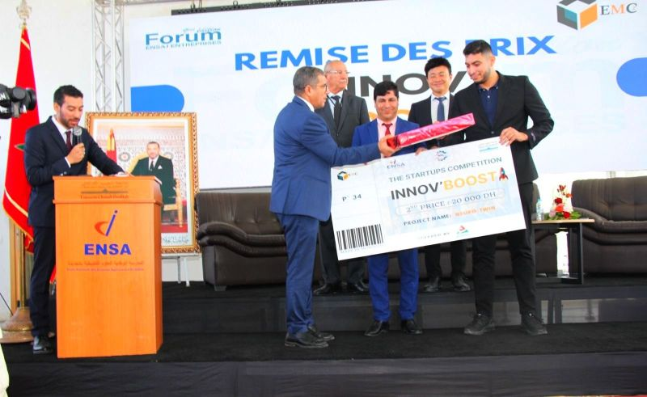
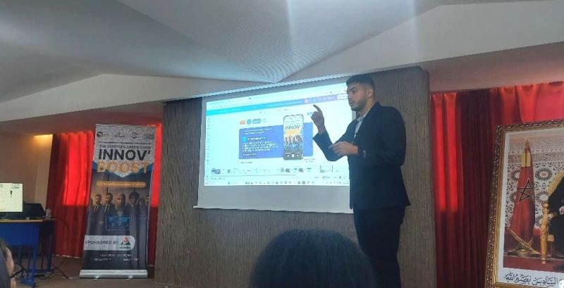
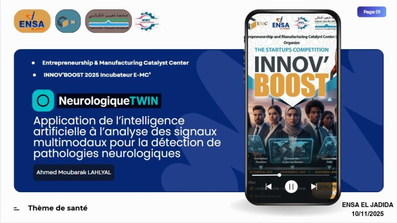

AI Engineer · Data Foundations
Trustworthy AI · Generative AI · Data Engineering
>
I build intelligent systems from data to deployment — with security, traceability and measurable performance in mind.
I am an AI Engineer with a strong Data Engineering foundation and hands-on experience in Machine Learning, Generative AI, Knowledge Graphs, multimodal systems and trustworthy AI. My work spans the complete AI lifecycle — data preparation, model development, retrieval systems, agent orchestration, APIs, security mechanisms, evaluation and deployment. I particularly enjoy problems where AI must operate under real engineering constraints: reliability, traceability, security, performance and maintainability.
From ML experimentation to LLM-based applications, agents and APIs.
Pipelines, SQL, Big Data, Knowledge Graphs and heterogeneous data.
Security, controlled retrieval, evaluation, traceability and governance.
Not many unrelated internships — a progression that assembled the layers of the AI Engineer profile I have today.
Four experiences with exact dates — the project, the problem, my contribution, the stack and the result. Each links to the full project.
One peer-reviewed publication, one manuscript in preparation, and a clear research direction — from knowledge representation to trustworthy generative AI.
A Platform for Exploring Sustainable Locations Worldwide
Co-authored an AI-enabled platform for exploring sustainable urban locations, combining geographic services (Google Maps, Street View, Places APIs), environmental analytics and generative AI (Gemini).
Trustworthy Document AI & Secure LLM-Based Information Access
Research on secure document intelligence and controlled LLM-based access for sensitive multi-domain documents — Document AI, RAG, Knowledge Graphs, role-aware retrieval, adversarial filtering and output governance.
Across these experiences, my work progressively moved from knowledge representation and multimodal learning toward trustworthy generative AI systems.
My research interests focus on AI systems that combine strong predictive or generative capabilities with security, traceability, evaluation and real-world engineering constraints.
From Document Intelligence to Trustworthy Generative AI
How can an organization use LLMs over sensitive documents without giving every user access to every piece of information?
I designed and implemented major parts of the system as part of the LISTIC research team.
Each project is framed the same way — Problem, What I built, My contribution, Technical approach, Results, Takeaway — with a live visualization of how it actually works.
The part that matters most for critical systems: not which framework, but how decisions are made.
Start from the use case, constraints and measurable objective.
A simple, measurable baseline before agents, graphs or larger models.
No result is real until it is quantified on a defined protocol.
Access control, provenance and output validation are not afterthoughts.
Every answer should be explainable back to its source.
The more critical the decision, the stronger the validation.
Modular, documented systems others can extend safely.
Most model problems are data problems in disguise.
Experiments and failure cases teach more than assumptions.
The simplest architecture that reliably solves the problem wins.
“I don't use AI because it is fashionable. I use it when it provides measurable value.”
“I see AI engineering as a complete system problem: data, models, software, security, evaluation and deployment.”
An honest overlap between what I have been building and what I want to explore next.
What attracts me is the opportunity to work on AI where performance alone is not enough — reliability, security, traceability and human control also matter.
I want to understand how advanced AI research becomes a dependable capability in real industrial and critical systems.
What technical problem would you want me to work on first?
Data → Models → APIs → Security → Deployment.
Defining experiments and implementing working systems.
Access control, adversarial requests, sensitive data, LLM governance.
Industrial data, Knowledge Graphs, Multimodal AI, Generative AI.
Architecture, documentation, scientific writing, presentations.
Profile-grounded AI — an assistant grounded in my complete profile: research & publications, projects, skills, experience and engineering approach. Intent-aware retrieval over one verified profile, answered by Llama 3.2 when running locally, or a curated profile mode on the web. It never redirects everything to one project.
Interview questions I can answer orally. Click to reveal concise points (not auto-answered).
Not a logo wall. Tools are not the goal — architecture and measurable value are.
Not a list of adjectives — how I actually work on technical problems and in a team.
I like understanding systems beyond the surface.
I break complex problems into measurable components.
I value reproducible experiments, testing and documentation.
I investigate and prototype independently, while knowing when expert feedback is needed.
I explain technical decisions clearly and collaborate around feedback and shared objectives.
I have worked across Data Analytics, Knowledge Graphs, Deep Learning, Generative AI and secure AI systems.
A 2nd-place innovation award and two focused hackathons — evidence of fast prototyping and delivery.
The Startups Competition, Forum ENSAJ Entreprises (ENSA El Jadida) — multimodal EEG + IMU AI for neurological monitoring.



An application combining open data and AI agents to improve access to healthcare services.
Security analysis and rapid prototyping / development under time constraints.
ENSA El Jadida.
EFREI Paris. Apprenticeship: 2 weeks company / 1 week school.
Plus verifiable certifications in cloud, data and Python.
Ahmed Moubarak Lahlyal · AI & Data Engineer
Advanced Master® — Data & Generative AI Engineering · EFREI Paris
Apprenticeship: 2 weeks company / 1 week school
Could you tell me more about the AI project and its main technical challenges?
How do you validate AI systems when reliability and security are critical?
What would you expect an apprentice to accomplish during the first three to six months?
Thank you for the discussion.